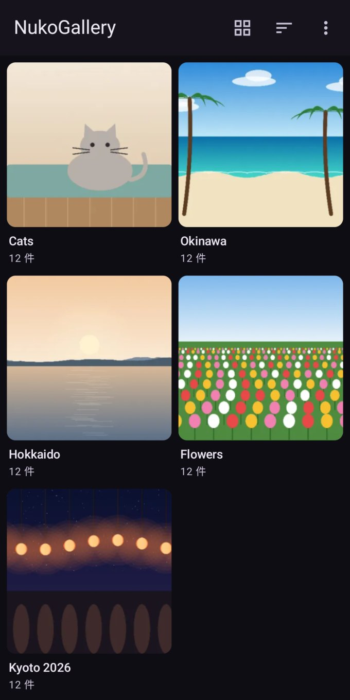
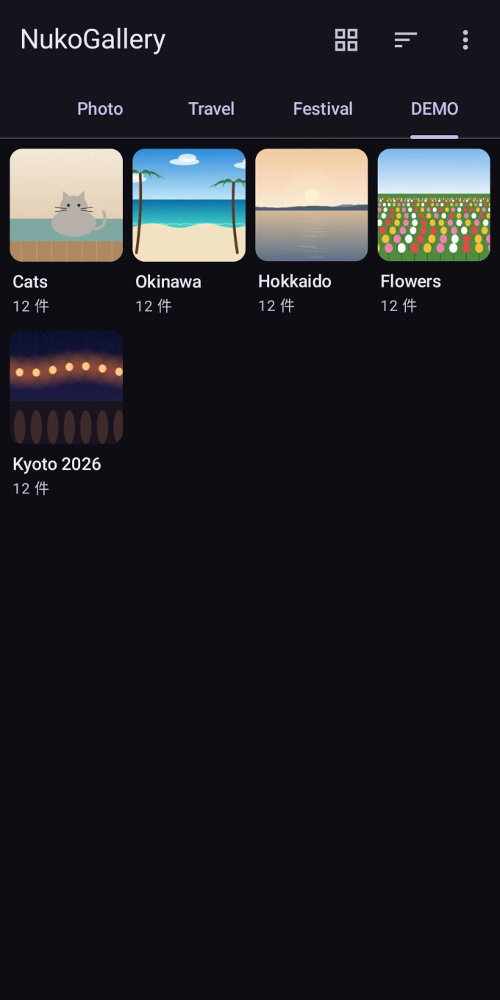
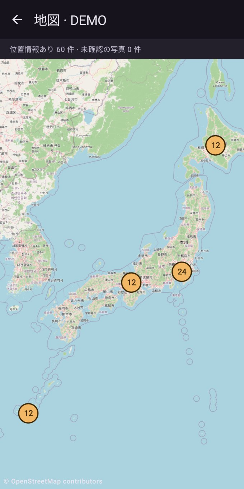
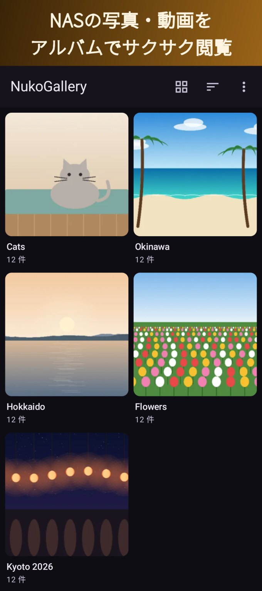
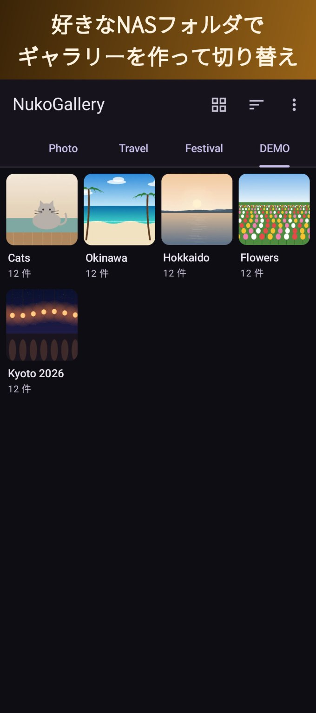
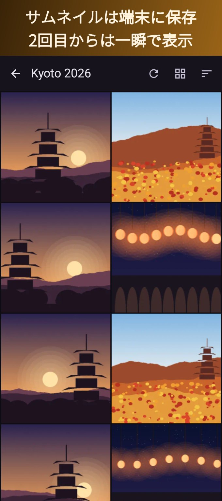
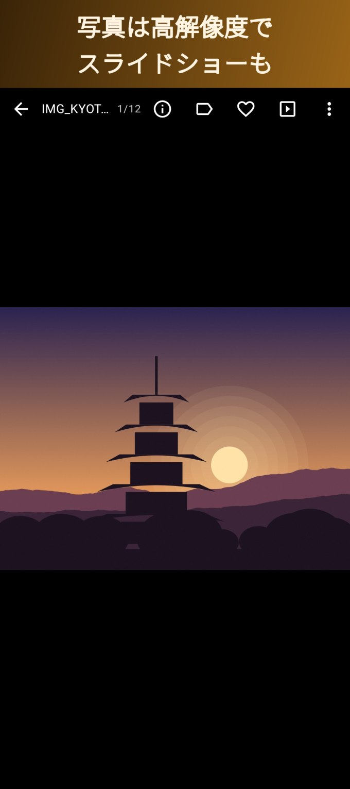
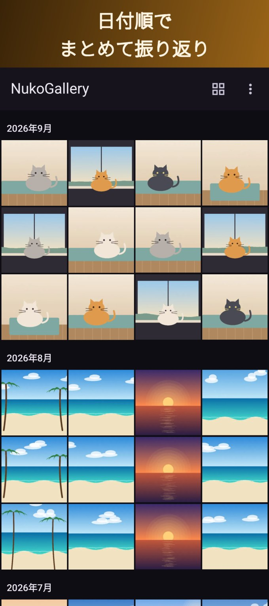
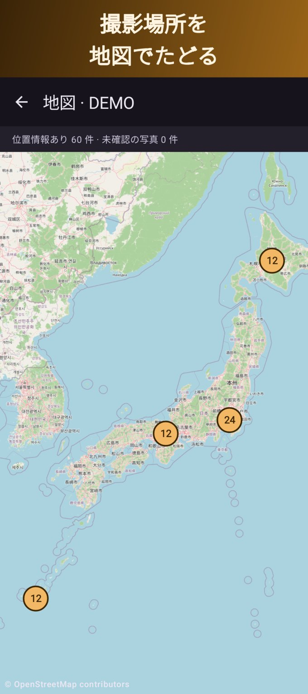
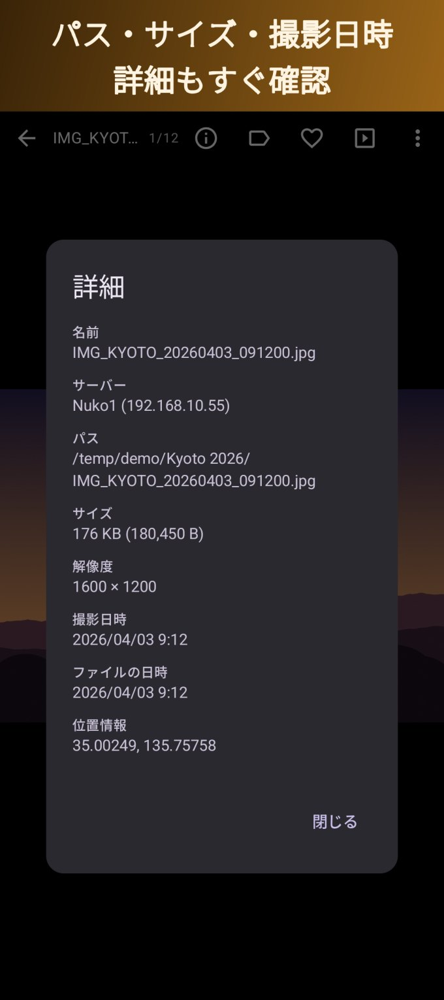

NASの写真・動画を、スマホのギャラリーのように
NASの写真を見ようとすると一覧が遅い、大きな動画をシークすると延々と読み込む、外部プレイヤーに渡すと途中で止まる——そんな不満を解消するための閲覧アプリです。一覧は端末に覚えておくのですぐに表示、動画は必要な部分だけ読むのでシークも速い。

NASのあちこちにあるフォルダを、好きな単位のギャラリーにまとめて切り替え。


NASを待たせない、読みすぎない。
「旅行」「家族」「趣味」など、NASのフォルダを集めてギャラリーに。左右スワイプで切り替え、アルバム表示か日付順かもギャラリーごとに。
フォルダの中身とサムネイルを端末に覚えておくので、2回目からはNASを待たずに表示。Synologyの@eaDirや写真に埋め込まれた小さな画像も活用します。
必要な部分だけ読むので、大きな動画でもシークや次の動画への切り替えがすぐ。明るさ・音量・シークのジェスチャー、続きから再生にも対応。
日付順と高速スクロール、お気に入り、タグ、検索、撮影場所の地図、スライドショー。RAWは埋め込みプレビューで表示。
パス・サイズ・解像度・撮影日時・位置の詳細表示。コピー・移動・削除もアプリから。NASに書き込むのはこの操作をしたときだけです。
NASのフォルダはめったに変わらないので、更新の確認は「更新」ボタンを押したときだけ(間隔の設定も可)。NASにもWi-Fiにもやさしい。







家庭用NAS、Windowsの共有フォルダ、Raspberry Piなど。
閲覧の機能はすべて無料。もっと使いこなしたい方にProを用意しています。
写真や動画は、あなたのスマホとあなたのサーバーの間だけ。